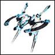

|
||||||||||||||||||||||||||||||||||||||||||||||||||
| 【退魔練操剣最大奥義マッハブレイカー】 たいまれんそうけんさいだいおうぎまっはぶれいかー [必殺技] |
| 妖聖剣ティンクル・ベルにセルダール中の錬気を集めて放ったリリィの奥義。その威力は敵艦の砲撃を切り裂き、リリィ自身が乗っていたルクシオールの甲板を傷つけるほどだった。 |
| |
| 【駄菓子でポン！】 だがしでぽん [娯楽/雑貨] |
| PS2版「GALAXYANGEL」のミニゲーム。 元々はミントが購入した駄菓子通の付録。 最後の相手であるミルフィーユに勝った者は一生分の運を使い切ったと言っても過言ではない。 簡易版麻雀なので子供からお年寄りの方でも楽しめる |
| |
| 【ダークエンジェル】 だーくえんじぇる [戦艦/兵器] |
| 黒き月が製造した、「ヘルハウンズ隊」専用の黒い紋章機。 「人間による操縦」ではなく「人間の脳を部品としてコントロールするシステム」を特徴とする。 「ノア」（アンドロイド）により、パイロットを、機体が取り込み、進化型へとパワーアップする。 |
|
|
| |
| 【多次元文明】 たじげんぶんめい [歴史] |
| 遥か昔、「EDEN」が築いていたと考えられている文明。 複数の宇宙を「ABSOLUTE」を介して多くの物資と技術が行き来していたと考えられる。 |
| |
| 【・・・ただいま】 [台詞/行動] |
| クロノクエイクを封じた二人が仲間たちの「おかえりなさい。」に答えた一言。 |
| |
| |
| 【ダルノー】 だるのー [キャラ/通称] |
| ミントの父親。フルネームは「ダルノー・ブラマンシュ」 ブラマンシュ商会の総帥。 |
| |
| 【タンデム型コクピット】 たんでむがたこくぴっと [技術] |
| 7番機を決戦兵器に改良した際に改造されたコクピット。後ろにタクト、前にヒロインが搭乗する。 |
| |
| 【第一次ヴァルファスク大戦】 だいいちじう゛ぁるふぁすくたいせん [歴史] |
| 「ヴァルファスク」が「ABSOLUTE」でクーデターを起こしてから「EDEN」に追放されるまでを差す。 |
| |
| 【第二次ヴァルファスク大戦】 だいにじう゛ぁるふぁすくたいせん [歴史] |
| 「クロノクエイク」後に「ヴァルファスク」が再び決起し、「トランスヴァール」軍に倒されるまでを差す。 対エオニア戦の前期、対ネフューリア戦の中期、対ゲルン戦の後期に分けられる。 正確に言えば前期は「ヴァルファスク」との直接接触は無いが便宜上ひとくくりとする。 |
| |
| |
| 【チョコレートボンボン】 ちょこれーとぼんぼん [娯楽/雑貨] |
| カルーアがテキーラに変身するために食べるアルコール入りのチョコレートのお菓子。普段はミモレットの中にある。カズヤと恋人になる際、変身抑制効果のあるボンボンを作った。 |
| |
| 【ディスト・ディータ】 でぃすと・でぃーた [戦艦/兵器] |
| ディータの乗る大型戦艦。たびたびルーンエンジェル隊を苦しめる。 |
| |
| 【ディータ】 でぃーた [キャラ/通称] |
| ヴェレル配下の魔女。 辺境出身者であるカルーア（テキーラ）が公認Ａ級魔女になり、自分がなれなかったことからカルーア（テキーラ）に強い恨みを抱いている。 アニスにブレイブハートを盗ませた上で破壊しようとしたり、カルーアに呪いをかけたり、チンピラを洗脳したり、魔封結界を張るなど様々な策でルーンエンジェル隊を苦しめるも最後は炎上する自身の艦と運命を共にした。 |
| |
| 【テキーラ】 てきーら [キャラ/通称] | |
| カルーアのもう一つの人格。のんびりしているカルーアに対して攻撃的な性格で戦闘的な魔法を数多く行使する。 カルーアはテキーラ時の記憶がないがテキーラはカルーア時の記憶も所持している。 |
|
| |
| 【デバストラ機動爆雷】 でぱすとらきどうばくらい [戦艦/兵器] |
| ヴァル・ファスクの巨大特殊兵器。EDENのスカイパレスを攻撃するために使用された。 一言で言い表すならドリルミサイル。 |
| |
| 【デパートシップ】 でぱーとしっぷ [施設] |
ブラマンシュ財閥が所有する超巨大商船。その大きさは、ルクシオールを凌ぐ。 |
| |
| |
| 【デラス・ジオ駆逐艦】 でらす・じおくちくかん [戦艦/兵器] |
| ヴァル・ファスク軍の駆逐艦 |
| |
| 【デリシャスバー】 でりしゃすばー [娯楽/雑貨] |
| ナノナノがよく買ってるお菓子。 いろいろな味があり、基本のチーズ味や、通も唸るナットウ味などがある。 |
| |
| 【トランスバール】 とらんすばーる [惑星/衛星] |
| 「EDEN」の惑星の１つ。 「クロノクェイク」から約200年後に「白き月」が現れ、「ロストテクノロジー」を「ギフト」として分け与えられ、急速に復興する。 その後の400年で版図を拡大し、トランスバール皇国として栄える。 |
| |
| 【トリックマスター】 とりっくますたー [兵器/戦艦] | |
|  | 「EDEN」製「紋章機」の１つ。形式番号「GA-003」 全長 36.8m/全幅 37.6m/全高 17.4m パイロットは「ミント・ブラマンシュ」 必殺技は「フライヤーダンス」 |
| |
| 【トライアゲーン】 とらいあげーん [台詞/行動] |
| 普段冷静なモルデン先生が、患者の為に再び命を賭けること。または、その様。 |
| |
| GA用語集にご応募いただきありがとうございました。 |
| ご応募いただいた用語については精査の上、GAII最新作「永劫回帰の刻」デラックスパック特典の小冊子、『エンサイクロペディアGA』に掲載させていただきます。 また、 ご応募いただいた方には、「GA用語集に力を貸していただいた方」としてお名前をこちらに掲載させていただきました。 この度はGA用語集にたくさんのご応募をいただき、本当にありがとうございました。 |
© BROCCOLI